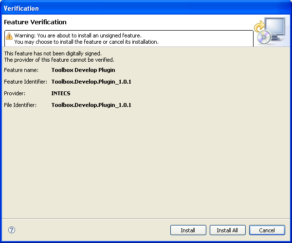

Click on the "Help" menu and select "Software Updates/Find and Install" item.
Select "Search for features to install".
Select at least the Intecs download site, added when installing for the first time the Develop Environment. Click on the "Finish" button.
The Intecs site is checked and, if available, the new plugin is shown. Select it and click "Next".
Accept the terms of licence and click "Next". On the Install final tab, click "Finish".
If asked for feature verification, click "Install All".
